청소년상담사-1급(1교시) (2018-10-06 기출문제)
1과목: 상담사 교육 및 사례지도
1. 수퍼바이저의 역할과 기능에 관한 설명으로 옳은 것은?
- 수퍼바이저는 한 회기에 한 가지 역할에 충실하면 된다.
- 자문가 역할은 수퍼바이지의 문제를 해결하거나 의사결정을 도울 때 사용한다.
- 교사 역할은 수퍼바이지가 역전이 문제를 경험할 때 사용하면 효과적이다.
- 평가자 역할은 수퍼바이지에게 힘을 북돋아 주는 것을 의미한다.
- 멘토 역할은 수퍼바이지가 사례에 대한 이해를 바탕으로 상담목표 설정을 돕는 것이다.
(정답률: 알수없음)

2. 수퍼비전 기법 중 미리 녹화된 상담회기 화면을 보고 이미지를 떠올리고, 언급되지 않은 안건을 확인하는 기법은?
- 현장 수퍼비전
- 대인관계과정회상(IPR)
- 전화개입
- 수퍼비전 구조화
- 팀 수퍼비전
(정답률: 알수없음)
3. 통합적 발달모델(Integrated Developmental Model)은 상담자 발달단계를 설명하는데 수준 3에 해당하는 설명으로 옳은 것은?
- 동기와 불안 둘 다 높고 기술에 관심이 많다.
- 자율성과 의존성 사이의 갈등을 경험한다.
- 상담에서 ‘자기’ 사용과 이해에 초점을 맞춘다.
- 수퍼바이저에 의존적이며 긍정적 피드백을 요구한다.
- 자신감이 있다가 다른 순간에는 자신감을 잃으며, 상담활동에 대한 동기가 동요된다.
(정답률: 알수없음)
4. 행동주의 수퍼비전에 관한 설명으로 옳지 않은 것은?
- 수퍼바이지에게 무의식적 정신과정, 대상관계 등의 기술적 토대를 가르친다.
- 수퍼바이지에게 상담기술을 가르치는데 적용하는 기법들이 다양하다.
- 수퍼바이지 개개인의 특수성을 고려하여 목표달성 여부를 평가한다.
- 수퍼바이지의 수행능력에 대한 엄격한 평가를 수행한다.
- 사용하는 기법들은 엄격한 과학적 방법으로 검증된 것들이다.
(정답률: 알수없음)
5. 다음은 수퍼바이지가 수퍼비전을 받은 뒤 작성한 후기이다. 이 수퍼바이지가 경험한 수퍼비전은 어떤 이론에 기반한 것인가?
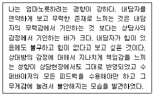
- 정신분석 수퍼비전
- 인간 중심 수퍼비전
- 체계적 모델 수퍼비전
- 구별모델 수퍼비전
- 행동주의 수퍼비전
(정답률: 알수없음)
6. 인간중심 수퍼비전에 관한 설명으로 옳지 않은 것은?
- 수퍼바이저는 수퍼바이지에게 경청하고 반응하되 질문은 최소화 한다.
- 수퍼비전 평가의 주체는 수퍼바이지이다.
- 수퍼바이저와 수퍼바이지는 검증 가능한 목표를 구체적으로 미리 정해놓는다.
- 수퍼비전 과정에서 수퍼바이지의 내담자에 대한 태도에 관심을 갖는다.
- 수퍼바이지의 문제 진단 혹은 진단명 붙이기 등을 경계한다.
(정답률: 알수없음)
7. 버나드(J. Bernard)의 구별모델(Discrimination Model)에서 제시하는 수퍼바이저의 세 가지 역할은?
- 교사 - 상담자 - 자문가
- 교사 - 촉진자 - 자문가
- 교사 - 관찰자 - 사례관리자
- 교사 - 상담자 - 행정가
- 교사 - 자문가 - 평가자
(정답률: 알수없음)
8. 겔소와 헤이즈(C. Gelso & J. Hayes)가 밝힌 수퍼바이지의 역전이 관리 필수요소를 모두 고른 것은?
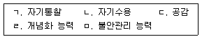
- ㄱ, ㄴ, ㄷ
- ㄴ, ㄷ, ㄹ
- ㄱ, ㄴ, ㄹ, ㅁ
- ㄱ, ㄷ, ㄹ, ㅁ
- ㄱ, ㄴ, ㄷ, ㄹ, ㅁ
(정답률: 알수없음)
9. 캐롤(M. Carroll)이 제시하는 수퍼바이저의 윤리적 결정단계의 순서로 옳은 것은?
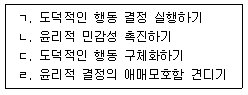
- ㄱ → ㄴ → ㄷ → ㄹ
- ㄴ → ㄷ → ㄹ → ㄱ
- ㄴ → ㄷ → ㄱ → ㄹ
- ㄹ → ㄷ → ㄱ → ㄴ
- ㄹ → ㄷ → ㄴ → ㄱ
(정답률: 알수없음)
10. 수퍼바이저와 수퍼바이지의 관계에 관한 설명으로 옳은 것을 모두 고른 것은?
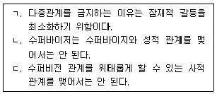
- ㄴ
- ㄷ
- ㄱ, ㄴ
- ㄴ, ㄷ
- ㄱ, ㄴ, ㄷ
(정답률: 알수없음)
11. 사례에서 상담자를 수퍼비전 할 때 수퍼바이저가 어떤 작업을 해야 하는지 옳은 것을 모두 고른 것은?
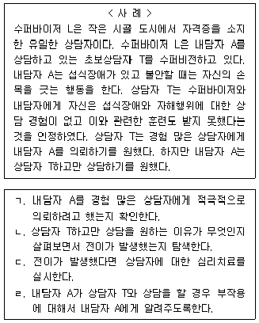
- ㄱ
- ㄱ, ㄴ
- ㄱ, ㄴ, ㄷ
- ㄱ, ㄴ, ㄹ
- ㄴ, ㄷ, ㄹ
(정답률: 알수없음)
12. 집단수퍼비전의 장점에 해당하지 않는 것은?
- 자기인식을 현실 검증할 수 있는 기회를 제공한다.
- 집단 응집력을 통해 심리적 안정감을 제공해 준다.
- 안전한 환경에서 새로운 행동을 시도할 수 있는 기회를 갖게 한다.
- 다른 수퍼바이지의 사례를 통해 다양한 상담개입방법에 대한 이해를 돕는다.
- 참여자 각자의 요구를 충분히 다룰 수 있다.
(정답률: 알수없음)
13. 사례보고서에 들어갈 수 있는 요소를 모두 고른 것은?
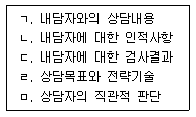
- ㄱ
- ㄷ, ㄹ
- ㄱ, ㄴ, ㄷ
- ㄱ, ㄴ, ㄷ, ㄹ
- ㄴ, ㄷ, ㄹ, ㅁ
(정답률: 알수없음)
14. 수퍼바이지가 성장할 수 있는 피드백과 평가의 지침으로 옳지 않은 것은?
- 체계적이고 객관적이고 정확해야 한다.
- 수퍼바이지가 명확히 이해할 수 있도록 제시한다.
- 피드백의 유효성에 대하여 설득한다.
- 사건이 일어난 직후 가능한 빠르게 피드백하는 것이 좋다.
- 실례를 들어서 피드백한다.
(정답률: 알수없음)
15. 수퍼비전에 대한 수퍼비전의 형식과 기법에 해당하는 것을 모두 고른 것은?
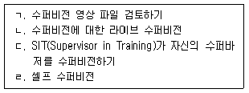
- ㄱ
- ㄴ, ㄷ
- ㄱ, ㄴ, ㄷ
- ㄴ, ㄷ, ㄹ
- ㄱ, ㄴ, ㄷ, ㄹ
(정답률: 알수없음)
16. 수퍼비전 관계형성을 위한 필수요소를 모두 고른 것은?
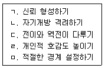
- ㄱ, ㄴ
- ㄴ, ㄹ
- ㄷ, ㄹ, ㅁ
- ㄱ, ㄴ, ㄷ, ㅁ
- ㄱ, ㄴ, ㄷ, ㄹ, ㅁ
(정답률: 알수없음)
17. 수퍼바이지가 직면하는 도전과제에 관한 설명으로 옳지 않은 것은?
- 자기회의와 두려움 다루기
- 내담자에게 인정받으려는 욕구 자각하기
- 미해결 문제 확인하고 다루기
- 문제해결자로서의 역할에 충실하기
- 역전이 확인하기
(정답률: 알수없음)
18. 삼자관계 체계로서의 수퍼비전에 관한 설명으로 옳지 않은 것은?
- 삼자관계의 주체는 내담자, 수퍼바이지, 수퍼바이저이다.
- 수퍼바이지는 내담자와 수퍼바이저 사이에서 통로역할을 한다.
- 삼자관계는 병행과정과 이형동질(異形同質)과정의 기초가 된다.
- 이형동질 개념은 전략적 가족상담가들이 사용한 개념이다.
- 수퍼비전에 대한 수퍼비전에서는 병행과정이 나타나지 않는다.
(정답률: 알수없음)
19. 수퍼바이저의 자기개방에 관한 설명으로 옳은 것을 모두 고른 것은?
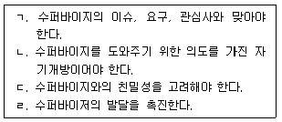
- ㄱ, ㄴ
- ㄱ, ㄹ
- ㄱ, ㄴ, ㄷ
- ㄴ, ㄷ, ㄹ
- ㄱ, ㄴ, ㄷ, ㄹ
(정답률: 알수없음)
20. 승화적 개입에 관한 설명으로 옳은 것을 모두 고른 것은?
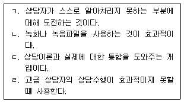
- ㄱ, ㄴ
- ㄴ, ㄹ
- ㄱ, ㄴ, ㄹ
- ㄱ, ㄷ, ㄹ
- ㄱ, ㄴ, ㄷ, ㄹ
(정답률: 알수없음)
21. 수퍼비전 관계에서 전이에 관한 설명으로 옳은 것은?
- 수퍼바이지가 경험하는 전이는 부정적 전이를 의미한다.
- 수퍼바이지의 전이는 심리검사 수퍼비전에서도 나타날 수 있다.
- 부정적 전이는 수퍼바이저를 이상화하는 것으로 나타난다.
- 전이는 수퍼바이저가 수퍼바이지에게 상담을 제공해야 하는 이유가 된다.
- 부정적 전이보다 긍정적 전이를 다루는 것이 더 어렵다.
(정답률: 알수없음)
22. 다음 사례에서 수퍼바이저가 우선적으로 확인해야 할 질문으로 적절하지 않은 것은?
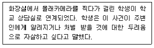
- 구체적인 자살계획을 세웠는지 확인했는가?
- 내담자가 이전에도 몰래카메라 사건으로 처벌 받은 적이 있는가?
- 과거 내담자의 자살시도 경험을 탐색했는가?
- 자살방지 서약서를 작성했는가?
- 보호요인 확인을 위해 가족관계를 탐색하였는가?
(정답률: 알수없음)
23. 수퍼비전에서 다루는 역전이에 관한 설명으로 옳지 않은 것은?
- 수퍼비전과 심리치료의 경계는 모호할수록 좋다.
- 대인관계과정회상(IPR)법을 사용해서 수퍼바이지의 역전이 반응을 탐색할 수 있게 한다.
- 수퍼바이지가 상담목표와 다른 방향의 상담을 진행할 때 역전이 문제를 다룰 수 있다.
- 수퍼바이지를 과도하게 도와주고 싶거나 미워하는 마음은 수퍼바이저의 역전이다.
- 역전이를 효과적으로 다루는 능력은 수퍼바이저의 필요한 역량이다.
(정답률: 알수없음)
24. 수련의 지속 여부를 검토해야 할 문제가 있는 수퍼바이지에 관한 설명으로 옳지 않은 것은?
- 수퍼바이지의 문제가 인지영역에 한정되어 있다.
- 수퍼바이저의 치료권고에도 불구하고 충동조절의 문제를 해결하려는 모습을 보이지 않는다.
- 수퍼바이지의 상담이 내담자에게 부정적 영향을 미친다.
- 강도 높은 교정 노력에도 불구하고 문제행동이 개선되지 않는다.
- 상담자로서 해결해야 할 개인적 문제가 확인되었지만 문제를 인식하거나 다루지 못한다.
(정답률: 알수없음)
25. 버나드(J. Bernard)의 구별모델에서 설명하는 사례개념화 기술에 해당하지 않는 것은?
- 내담자의 진술을 이해하는 능력
- 내담자의 진술에서 주제를 명확히 하는 기술
- 내담자에게 적절한 목표를 가려내는 기술
- 상담목표에 적절한 전략을 선택하는 기술
- 내담자의 위기를 관리하는 기술
(정답률: 알수없음)
2과목: 청소년 관련 법과 행정
26. 제6차 청소년정책기본계획(2018∼2022)의 12대 중점 과제에 해당하지 않는 것은?
- 청소년 참여 확대
- 국제화ㆍ정보화시대의 주도능력 배양
- 대상별 맞춤형 지원
- 청소년지도자 역량 제고
- 청소년 체험활동 활성화
(정답률: 알수없음)
27. 여성가족부에서 청소년상담사 양성 및 보수교육에 관한 업무를 담당하는 부서는?
- 청소년정책과
- 청소년활동안전과
- 청소년자립지원과
- 청소년보호환경과
- 학교밖청소년지원과
(정답률: 알수없음)
28. 주무부처가 여성가족부인 법률을 모두 고른 것은?
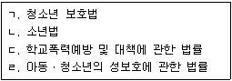
- ㄱ, ㄴ
- ㄱ, ㄷ
- ㄱ, ㄹ
- ㄴ, ㄷ
- ㄷ, ㄹ
(정답률: 알수없음)
29. 청소년 보호법령에 따라 수립된 제2차 청소년보호종합대책(2016∼2018)의 비전으로 옳은 것은?
- 현재를 즐기는 청소년, 미래를 여는 청소년, 청소년을 존중하는 사회
- 청소년이 행복한 세상, 청소년이 꿈꾸는 밝은 미래
- 청소년과 함께 꿈과 희망의 동북아 중심국가 실현
- 꿈을 키우는 청소년, 희망을 더하는 가족, 밝은 미래사회
- 청소년이 건강하고 안전한 대한민국 실현
(정답률: 알수없음)
30. 청소년 기본법령상 청소년참여위원회의 구성 및 운영에 관한 설명으로 옳지 않은 것은?
- 위원은 성별ㆍ연령ㆍ지역 등을 고려하여 구성하여야 한다.
- 위원장은 위원 중에서 해당 지자체 장의 추천을 통하여 선출한다.
- 효율적인 정책 제안 등을 위하여 필요한 경우 분과위원회를 둘 수 있다.
- 청소년 관련 정책에 관한 의견 제안을 위하여 필요한 경우 설문조사, 토론회 등을 통하여 여론을 수렴할 수 있다.
- 위원장은 참여위원회의 회의를 주재한다.
(정답률: 알수없음)
31. 청소년 기본법령상 청소년정책위원회에 관한 설명으로 옳은 것은?
- 위원장 1명을 포함하여 25명의 위원으로 구성한다.
- 위원장은 여성가족부 차관이 된다.
- 위촉 위원의 임기는 3년으로 한다.
- 청소년정책위원회에 청소년정책실무위원회를 둔다.
- 당연직 위원으로 방송통신위원회위원장이 포함된다.
(정답률: 알수없음)
32. 청소년 기본법령상 청소년단체 중 여성가족부장관이 정하여 고시하는 단체에 근무하는 청소년상담사가 이수하여야 할 보수교육 시간은?
- 매년 6시간 이상
- 매년 8시간 이상
- 격년 6시간 이상
- 격년 8시간 이상
- 격년 15시간 이상
(정답률: 알수없음)
33. 청소년 기본법령상 청소년육성기금에 관한 설명으로 옳은 것은?
- 기금은 기획재정부장관이 관리ㆍ운용한다.
- 개인이 출연하는 물품은 기금조성의 재원이 되지 않는다.
- 기금의 관리ㆍ운용에 관한 사무를 한국청소년활동진흥원에 위탁하는 경우 기금수입 담당책임자는 여성가족부소속 공무원 중에서 임명한다.
- 기금의 관리ㆍ운용자는 기금의 수입과 지출을 명확히 하기 위하여 한국은행에 청소년육성기금계정을 설치하여야 한다.
- 시장ㆍ군수ㆍ구청장은 청소년활동 지원에 필요한 재원을 확보하기 위하여 지방청소년육성기금을 설치하여야 한다.
(정답률: 알수없음)
34. 청소년활동 진흥법령상 한국청소년활동진흥원의 사업으로 명시되어 있지 않은 것은?
- 청소년 자원봉사활동의 활성화
- 청소년수련활동인증제도의 운영
- 청소년의 자립능력 향상을 위한 자활 및 재활지원
- 숙박형등 청소년수련활동 계획의 신고 지원에 대한 컨설팅 및 교육
- 청소년활동, 청소년기본법에 따른 청소년복지 및 청소년보호에 관한 종합적 안내 및 서비스 제공
(정답률: 알수없음)
35. 청소년활동 진흥법령상 정의 규정이다. ( )에 들어갈 내용으로 옳은 것은?
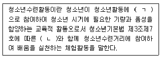
- ㄱ: 자발적, ㄴ: 청소년지도자
- ㄱ: 선택적, ㄴ: 청소년지도자
- ㄱ: 자발적, ㄴ: 청소년지도사
- ㄱ: 능동적, ㄴ: 청소년지도사
- ㄱ: 선택적, ㄴ: 청소년상담사
(정답률: 알수없음)
36. 청소년활동 진흥법령상 숙박형 청소년수련활동을 주최하려는 A는 경기도 양평군수 B에게 그 계획을 신고하려한다. 이에 관한 설명으로 옳지 않은 것은? (단, 계획 신고를 요하지 않는 경우는 고려하지 않음)
- A의 신고를 받은 경우, B는 신고를 받은 날부터 15일 이내에 그 수리 여부를 A에게 통지하여야 한다.
- A는 신고가 수리되기 전에는 모집활동을 하여서는 아니 된다.
- 미성년자가 수련활동을 보조하려는 경우 B는 신고를 수리하여서는 아니 된다.
- B는 관계 기관의 장에게 일정한 범죄 경력 등을 확인하기 위한 자료의 제공을 요청할 수 있다.
- B는 계획의 신고를 수리한 때에는 그 계획을 여성가족부장관에게 통보하여야 한다.
(정답률: 알수없음)
37. 청소년복지 지원법령상 다음의 설명에 해당하는 청소년복지시설은?
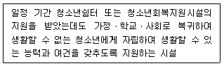
- 청소년상담복지센터
- 청소년치료재활센터
- 청소년이용권장시설
- 청소년자립지원관
- 청소년특화시설
(정답률: 알수없음)
38. 청소년복지 지원법령상 대전광역시 유성구의 위기청소년 A에 대한 특별지원에 관한 설명으로 옳지 않은 것은?
- A는 본인을 특별지원 대상 청소년으로 선정하여 줄 것을 구청장 B에게 신청할 수 있다.
- 구청장 B는 A로부터 선정신청을 받은 경우 지역사회 청소년통합지원체계 운영위원회의 심의를 거쳐 원칙적으로 신청일부터 30일 이내에 그 선정 여부를 결정하여야 한다.
- 구청장 B는 긴급한 지원필요가 있는 경우 지역사회 청소년통합지원체계 운영위원회의 심의를 거치지 아니하고 선정여부를 결정할 수 있다.
- 유성구는 반드시 필요하다고 인정되는 경우 A에게 금전의 형태로 지원할 수 있다.
- A에 대한 기초생계비 지원기간은 2년 이내로 하되, 필요한 경우 1년의 범위에서 두 번 연장할 수 있다.
(정답률: 알수없음)
39. 청소년복지 지원법령상 정의 규정이다. ( )에 들어갈 내용으로 옳은 것은?
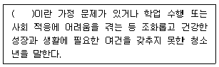
- 비행청소년
- 위기청소년
- 특별지원청소년
- 선도보호청소년
- 학교밖청소년
(정답률: 알수없음)
40. 청소년 보호법령상 위반행위의 종류에 따른 과징금 부과기준의 연결이 옳지 않은 것은? (단, 감경ㆍ면제사유는 고려하지 않음)
- 청소년에게 주세법에 따른 주류를 판매한 경우 - 위반 횟수마다 200만원
- 외국에서 제작ㆍ발행된 청소년유해매체물을 영리를 목적으로 청소년을 대상으로 유통케 한 경우 - 위반 횟수마다 1,000만원
- 주로 차 종류를 조리ㆍ판매하는 업소에서 청소년으로 하여금 영업장을 벗어나 차 종류를 배달케 한 경우 - 위반 횟수마다 1,000만원
- 영리를 목적으로 청소년으로 하여금 손님을 거리에서 유인케 한 경우 - 위반 횟수마다 300만원
- 청소년에 대하여 남녀혼숙을 하게 하는 등 풍기를 문란케 하는 영업 행위를 한 경우 - 위반 횟수마다 300만원
(정답률: 알수없음)
41. 청소년 보호법령상 환각물질 흡입 청소년에 대한 중독 판별검사의 신청권자로 명시되지 않은 자는?
- 본인
- 친권자
- 직계존속
- 미성년후견인
- 피성년후견인
(정답률: 알수없음)
42. 아동ㆍ청소년의 성보호에 관한 법령상 성교육 전문기관의 설치ㆍ운영 기준에 관한 설명으로 옳은 것은?
- 성교육 전문기관은 사무실, 교육장 및 성문화체험관을 합쳐 연면적 150m2 이상의 공간을 갖추어야 한다.
- 교육장은 20명 이상이 앉을 수 있는 공간과 교육에 필요한 기자재를 갖추어야 한다.
- 성교육 전문기관에는 기관의 장, 팀원, 전문강사 등 2명 이상의 교육 및 행정업무에 필요한 종사자를 두어야 한다.
- 성교육 전문기관의 장은 특별한 사유가 없으면 비상근(非常勤)으로 한다.
- 성교육 전문기관은 오전 11시부터 오후 7시까지 개관한다.
(정답률: 알수없음)
43. 아동ㆍ청소년의 성보호에 관한 법령상 위력으로써 아동ㆍ청소년을 추행한 경우, 디엔에이(DNA)증거 등 그 죄를 증명할 수 있는 과학적인 증거가 있는 때에 연장되는 공소시효의 기간은?
- 1년
- 3년
- 5년
- 7년
- 10년
(정답률: 알수없음)
44. 아동ㆍ청소년의 성보호에 관한 법령의 내용이다. ( )안에 들어갈 내용으로 옳은 것은?
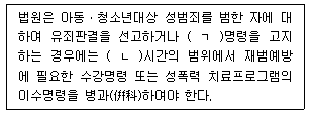
- ㄱ: 약식, ㄴ: 300
- ㄱ: 정식, ㄴ: 300
- ㄱ: 약식, ㄴ: 400
- ㄱ: 정식, ㄴ: 500
- ㄱ: 약식, ㄴ: 500
(정답률: 알수없음)
45. 아동ㆍ청소년의 성보호에 관한 법령상 아동ㆍ청소년의 성을 사는 범죄의 상대방이 된 아동ㆍ청소년은?
- 피해아동ㆍ청소년
- 대상아동ㆍ청소년
- 보호아동ㆍ청소년
- 특수피해아동ㆍ청소년
- 미약아동ㆍ청소년
(정답률: 알수없음)
46. 소년법상 소년부판사가 보호처분을 할 필요가 있다고 인정할 경우, ‘결정’으로써 하나의 처분을 해야 할 사항에 해당하는 것을 모두 고른 것은?
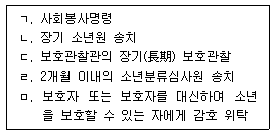
- ㄱ, ㄴ, ㄷ
- ㄱ, ㄷ, ㄹ
- ㄴ, ㄹ, ㅁ
- ㄱ, ㄴ, ㄷ, ㅁ
- ㄱ, ㄴ, ㄷ, ㄹ, ㅁ
(정답률: 알수없음)
47. 학교폭력예방 및 대책에 관한 법령상 학교폭력대책위원회에 관한 설명으로 옳은 것은?
- 위원회는 교육부장관 소속으로 둔다.
- 회의는 1개월에 1회 소집한다.
- 위원장은 회의소집시 긴급한 경우 외에는 회의 개최 7일 전까지 회의 일시ㆍ장소 및 안건을 각 위원에게 알려야 한다.
- 위원회는 위원장 2명을 포함하여 20명 이내의 위원으로 구성한다.
- 위원회에 간사 1명을 두되, 간사는 교육부차관이 된다.
(정답률: 알수없음)
48. 학교 밖 청소년 지원에 관한 법령상 학교 밖 청소년 지원센터에 관한 설명으로 옳지 않은 것은?
- 국가와 지방자치단체는 청소년상담복지센터를 지원센터로 지정할 수 있다.
- 청소년상담사 자격증 소지자로서 학교 밖 청소년 관련 실무 경력이 5년인 자는 지원센터의 장이 될 수 있는 자격요건에 해당한다.
- 지원센터의 지정기간은 5년으로 한다.
- 학교 밖 청소년 지원센터를 통한 상담은 대면, 전화 및 온라인 상담 등의 방법으로 한다.
- 국가와 지방자치단체의 장은 지원센터를 거짓으로 지정받은 경우 그 지정을 취소하여야 한다.
(정답률: 알수없음)
49. 국가 및 지방자치단체가 「국민기초생활 보장법」상의 차상위계층인 사람의 가구원으로 서 여성가족부장관이 정하는 연령에 해당하는 여성청소년을 대상으로 보건위생에 필수적인 물품을 지원할 것을 명시하고 있는 법령은?
- 청소년복지 지원법
- 아동ㆍ청소년의 성보호에 관한 법률
- 청소년 기본법
- 학교 밖 청소년 지원에 관한 법률
- 한부모가정지원법
(정답률: 알수없음)
50. 우리나라 청소년정책을 담당하였던 주무부처를 시기순으로 옳게 나열한 것은?
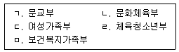
- ㄱ → ㄴ → ㅁ → ㄹ → ㄷ
- ㄱ → ㄹ → ㄴ → ㅁ → ㄷ
- ㄴ → ㄱ → ㄹ → ㄷ → ㅁ
- ㄴ → ㄷ → ㄹ → ㅁ → ㄱ
- ㄹ → ㄱ → ㄴ → ㅁ → ㄷ
(정답률: 알수없음)
3과목: 상담연구방법론의 실제
51. 연구윤리에 관한 설명으로 옳지 않은 것은?
- 출처를 표시하지 않은 채 타인의 아이디어를 자신의 것처럼 보고하는 것은 표절에 해당한다.
- 기만(deception)은 참여자들에게 연구 절차나 목적을 설명하지 않거나 또는 잘못된 정보를 제공하는 것을 의미한다.
- 연구자의 동일한 연구를 인용 표시 없이 다른 학술지에 게재하면 중복출판에 해당한다.
- 이미 출판된 논문에서 사용한 자료를 다른 관점과 방법으로 분석해서 그 결과를 다른 학술지에 게재하면 단편적 출판(piecemeal publication)에 해당한다.
- 구두뿐만 아니라 서면으로도 연구참여자들에게 사후 설명을 제공할 수 있다.
(정답률: 알수없음)
52. 논문의 ‘결과’ 부분에 포함될 수 있는 내용을 모두 고른 것은?
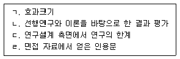
- ㄱ, ㄴ
- ㄱ, ㄹ
- ㄴ, ㄷ
- ㄴ, ㄹ
- ㄷ, ㄹ
(정답률: 알수없음)
53. 모의상담연구의 특징을 모두 고른 것은?
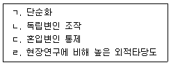
- ㄴ
- ㄱ, ㄷ
- ㄷ, ㄹ
- ㄱ, ㄴ, ㄷ
- ㄱ, ㄴ, ㄷ, ㄹ
(정답률: 알수없음)
54. 합의적 질적 연구에 관한 설명으로 옳은 것은?
- 면대면(face-to-face) 면접을 통해서만 자료를 수집한다.
- 연구 결과를 기술할 때 수량화된 분류를 사용한다.
- 자료를 영역으로 코딩하는 것은 자료 분석의 마지막 단계에서 실시한다.
- 연구자들 간에 존재하는 권력의 불균형문제는 별도로 의식할 필요가 없다.
- 기존의 질적 연구방법이나 이론에 영향을 받지 않고 개발된 방법이다.
(정답률: 알수없음)
55. 상담사는 소외 문제를 호소하는 청소년내담자 15명으로 구성된 의미치료 집단상담프로그램을 10주간 진행한 후, 사후검사로 소외 척도를 실시하여 프로그램의 효과를 검증하고자 한다. 이 연구와 관련한 설명으로 옳지 않은 것은?
- 사전점수가 없기 때문에 소외 수준의 변화를 파악할 수 없다.
- 연구와 무관한 사건이 발생해서 종속변인에 영향을 미칠 수 있다.
- 비교집단이 없기 때문에, 사후검사에서 참여자들의 소외 수준이 낮더라도 프로그램의 효과라고 단정할 수 없다.
- 청소년들의 자연스런 성숙으로 인해 사후검사에서 소외 수준이 낮을 수 있다.
- 연구 결과를 우울을 호소하는 청소년들에게 적용하는 것은 타당하다.
(정답률: 알수없음)
56. 신뢰도에 관한 설명으로 옳은 것을 모두 고른 것은?
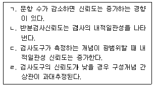
- ㄱ
- ㄴ
- ㄱ, ㄷ
- ㄴ, ㄹ
- ㄷ, ㄹ
(정답률: 알수없음)
57. 무선할당에 관한 설명으로 옳은 것을 모두 고른 것은?
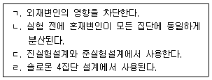
- ㄱ, ㄷ
- ㄱ, ㄹ
- ㄴ, ㄷ
- ㄱ, ㄴ, ㄹ
- ㄴ, ㄷ, ㄹ
(정답률: 알수없음)
58. 비합리적 사고가 우울에 미치는 영향이 의도적 반추의 수준에 따라 다른 것으로 확인되었다면, 의도적 반추가 갖는 효과를 지칭하는 것은?
- 매개효과
- 간접효과
- 조절효과
- 의사효과
- 이월효과
(정답률: 알수없음)
59. 구조방정식모형에 관한 설명으로 옳지 않은 것은?
- 연구모형 검증 시 영가설을 기각했다면 모형이 자료에 부합(fit)한다는 것을 의미한다.
- AIC(Akaike information criterion)는 두 모형이 서로 위계관계가 아닐 때 모형의 적합도를 비교하는 지수이다.
- 분산이 음수일 경우 Heywood case라고 한다.
- CFI(comparative fit index)의 값이 1에 가까우면 설정한 모형이 자료에 잘 부합한다는 것을 의미한다.
- 위계관계에 있는 두 모형의 적합도를 비교하기 위해 카이제곱(X2) 차이검증을 실시한다.
(정답률: 알수없음)
60. 구성개념의 ‘조작적 정의’에 관한 설명으로 옳은 것을 모두 고른 것은?
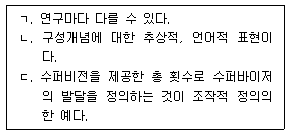
- ㄱ
- ㄴ
- ㄱ, ㄴ
- ㄱ, ㄷ
- ㄴ, ㄷ
(정답률: 알수없음)
61. 다음은 남녀 대학생 2,000명의 외향성을 측정한 결과이다. 여학생 A의 원점수가 76점이고, A의 남자친구 B는 A와 같은 백분위를 얻었다면 B의 백분위와 원점수는? (단, 두 집단은 모두 정상분포를 이루고 있음)
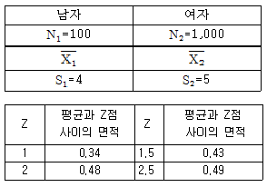
- 백분위: 34, 원점수: 80
- 백분위: 48, 원점수: 83
- 백분위: 48, 원점수: 85
- 백분위: 98, 원점수: 83
- 백분위: 98, 원점수: 85
(정답률: 알수없음)
62. 상담 연구에 관한 설명으로 옳은 것은?
- 연구대상이 매 순간 역동적으로 변화하기 때문에 반복검증을 할 필요가 없다.
- 해외에서 수행된 연구를 한국에 그대로 적용하여 실시해 보는 것도 가능하다.
- 가치판단이 개입되므로 자연과학 연구와는 달리 인위적인 변인의 통제가 불가능하다.
- 인간을 대상으로 하기 때문에 실험자의 임의적 판단을 최대한 허용해야 한다.
- 상담 분야의 지식은 내면의 복잡한 인지적, 정서적 가정을 다루기 때문에 경험 연구로는 검증이 불가능하다.
(정답률: 알수없음)
63. 연구논문 작성에 관한 설명으로 옳지 않은 것은?
- 이론적 배경에서는 선행연구 고찰을 통해 연구문제의 근거를 논리적으로 밝힌다.
- 선행연구 고찰을 통해 연구가설이 도출되기도 한다.
- 「미국심리학회(APA) 출판규정」6판에 따르면 30개 단어 이하의 직접인용은 큰따옴표(“ ”) 없이 독립된 단락으로 처리한다.
- 간접인용은 직접인용과 달리 큰따옴표 없이 기술하고 출처를 밝힌다.
- 연구문제가 측정 가능한 변인 중심으로 진술되었다면 용어의 정의를 기술해야 한다.
(정답률: 알수없음)
64. 연구문제에 관한 설명으로 옳은 것을 모두 고른 것은?
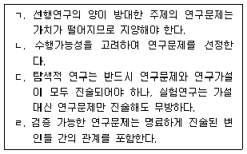
- ㄱ
- ㄱ, ㄴ
- ㄴ, ㄹ
- ㄷ, ㄹ
- ㄴ, ㄷ, ㄹ
(정답률: 알수없음)
65. 가설에 관한 설명으로 옳지 않은 것은?
- 관찰결과의 귀납은 일반적인 이론 정립의 기초가 된다.
- 통계적 가설은 가상적 분포에 근거하여 검토된다.
- 이론적 토대 없이 설정된 가설은 합리적 근거를 진술할 필요가 있다.
- 통계적 가설 검증은 이론을 증명한다기보다는 표본에서 얻은 결과를 토대로 지지 근거를 확인하는 것이다.
- 실험결과 혹은 관찰결과 산출된 통계치가 우연적 확률수준의 범위를 벗어나면 영가설이 수용된다.
(정답률: 알수없음)
66. 다음은 부모양육태도, 심리적 안정성, 사회성의 상관계수표이다. 부모양육태도의 영향을 통제한 후 심리적 안정성과 사회성의 부분상관계수(partial correlation coefficient)는? (단, 소숫점 셋째자리에서 반올림함)
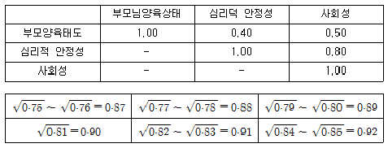
※ (부분상관계수 공식)
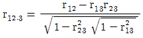
- 0
- 0.60
- 0.65
- 0.70
- 0.75
(정답률: 알수없음)
67. 실험연구의 타당도에 관한 설명으로 옳은 것을 모두 고른 것은?
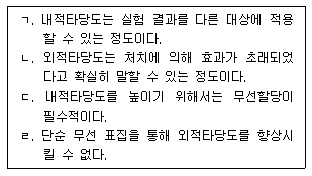
- ㄷ
- ㄹ
- ㄱ, ㄴ
- ㄴ, ㄷ, ㄹ
- ㄱ, ㄴ, ㄷ, ㄹ
(정답률: 알수없음)
68. 통계적 회귀에 관한 설명으로 옳은 것을 모두 고른 것은?
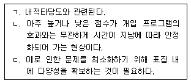
- ㄱ
- ㄷ
- ㄱ, ㄴ
- ㄴ, ㄷ
- ㄱ, ㄴ, ㄷ
(정답률: 알수없음)
69. 연구자가 새롭게 개발한 우울 척도(A)의 증분타당도(incremental validity)를 확인하고자 한다. 이 과정을 가장 잘 나타낸 것은?
- 우울 관련 전문가들에게 A의 문항들을 검토하게 한다.
- 40문항으로 구성된 A에 대해 요인분석을 실시한다.
- 기존의 우울척도 B와의 상관, 사회적 바람직성 척도 C와의 상관을 확인하고, 두 상관의 크기 비교한다.
- 우울증으로 진단을 받은 사람들과 정상인들에게 A를 실시한 다음, A점수가 두 집단에서 차이가 있는지를 확인한다.
- 적응 수준을 설명하기 위해, 기존의 우울척도 B점수를 위계적 회귀분석 1단계에 투입하고, A점수는 2단계에 투입한다.
(정답률: 알수없음)
70. 표집에 관한 설명으로 옳은 것은?
- 연구자가 모집단에 대한 사전지식과 전문적 식견이 있는 경우 목적표집이 효율적이다.
- 하위집단들이 유사하다면 군집표집보다 유층표집을 선택하는 것이 적절하다.
- 조사대상에 대한 대략의 정보를 신속하게 얻기 위해서는 할당표집보다는 유층표집이 적절하다.
- 우연적 표집은 표집대상에 대한 사전정보가 거의 없거나, 목표로 하는 대상을 찾기 어려울 때 용한다.
- 단순 무선 표집은 체계적 표집에 비해 간편하게 표본을 추출할 수 있다.
(정답률: 알수없음)
71. 고등학생의 진로결정유형을 합리형, 의존형, 직관형의 세 집단으로 나누고 그 영향요인을 아보고자 한다. 표에 관한 설명으로 옳지 않은 것은?
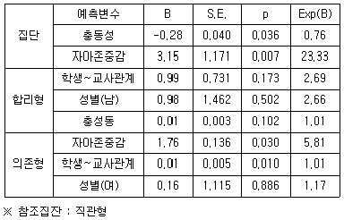
- 합리형 집단에서 충동성의 Wald 값은 - 7이다.
- 직관형을 참조집단으로 했을 때, 자아존중감이 한 단위 증가하면 합리형에 포함될 확률의 로 짓 점수는 3.15점 증가한다.
- 직관형을 참조집단으로 했을 때, 자아존중감이 한 단위 증가하면 의존형에 포함될 확률의 승산비는 5.81배 증가한다.
- 충동성이 증가함에 따라 합리형보다 직관형에 속할 확률이 높아진다.
- 모형의 적합도를 확인하기 위해서는 Deviance X2 이 필요하다.
(정답률: 알수없음)
72. 다문화가정 청소년의 자아정체감 변화를 연구하기 위해 전집으로부터 1,000명을 표집하여 연 1회 총 5년간 추적 조사한다. 이에 해당하는 것은?
- 이질집단 분석
- 패널 연구
- 생존분석
- 포커스 집단 연구
- 단일 사례 연구
(정답률: 알수없음)
73. 근거이론에 관한 설명으로 옳은 것을 모두 고른 것은?
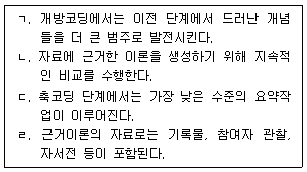
- ㄱ, ㄴ
- ㄱ, ㄷ
- ㄴ, ㄹ
- ㄱ, ㄷ, ㄹ
- ㄴ, ㄷ, ㄹ
(정답률: 알수없음)
74. 연구자는 청소년을 대상으로 중학교 입학 직전, 입학 후 6개월, 입학 후 1년, 입학 후 1년 6개월의 4개 시점에서 학교생활적응을 측정하고, 개인별 변화가 이차곡선으로 나타날것으로 가정하였다. 개인별 변화양상이 몇 개의 하위 잠재집단으로 분류되는지 확인하고 자 한다면, 이때 활용할 통계분석 방법으로 가장 적절한 것은?
- 군집분석
- 잠재계층 분석
- 성장혼합모형
- 잠재프로파일 분석
- 다항 로지스틱 회귀분석
(정답률: 알수없음)
75. 다음의 설명에서 의미하는 상담 연구윤리의 원칙은?
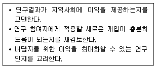
- 진실(integrity)
- 선의(beneficence)
- 자율(autonomy)
- 정의(justice)
- 충실(fidelity)
(정답률: 알수없음)